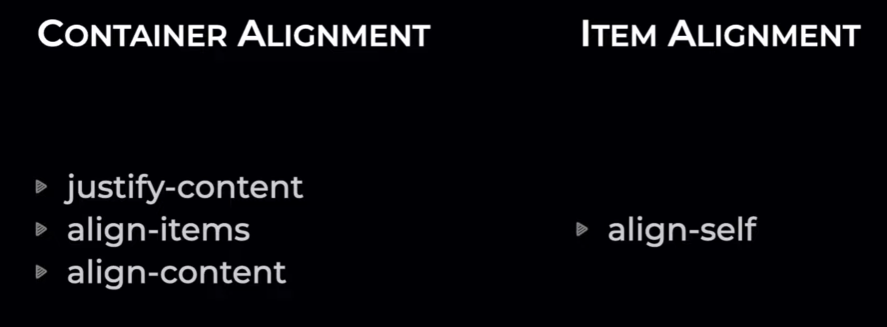

Примеры Flexbox
чтобы блоки выстроились горизонтально добавим контейнеру св-во disdlay:flex:
Ограничим размер контейнера по ширине контента, добавим контейнеру св-во display: inline-flex;
FLEX-DIRECTION.
свойство flex-direction: row-reverse;
мы изменили не порядок самих элементов
а изменили направление именно главной оси (MAIN AXIS)
FLEX-DIRECTION.
свойство flex-direction: column-reverse;
мы изменили не порядок самих элементов
а изменили направление именно вертикальной оси (CROSS AXIS)
FLEX-DIRECTION.
свойство flex-direction: column-reverse;
пример навигации на сайте
изменяем направление именно вертикальной оси (CROSS AXIS)
чтобы мобильное меню выстраивалось по вертикали
воспользуемся медиазапросом, быстро отзеркалить строки
меню погут св-ва flex-direction: column-reverse или flex-direction: column
FLEX-DIRECTION.
свойство flex-direction: column-reverse;
Сделаем отзывчивый элемент страницы
во всю ширину экрана с адаптацией под mobile
ПЕРЕНОС FLEX ЭЛЕМЕНТОВ
разрешаем перенос элементов свойством flex-wrap: wrap;
в flex контейнере!!!
по умолчанию стоит flex-wrap: nowrap; поэтому элементы
не переносяться имея любую ширину
теперь элементы имеют заданную ширину 200px
и все непомещающиеся item перенесутся на следующий ряд
/* flex: 1 уберет свободное место между блоками/элементами item*/
.flex-item{
flex: 1;
}
если это требуется
ОТСТУПЫ
/*При ширине 33.33% margin уберет 3 колонки и выстроит блоки в
2 колонки.
Поправим убрав 10px:
width: calc(33.33% - 10px);
теперь с колонками все хорошо, но отступы между элем. у нас не 5px а 10px,
т.е. margin не схлопываются, учитывается margin каждого элем.
если мы хотим выровнять отступы то в контейнер добавим
pading:5px;
ВСЕ ОТСТУПЫ РОВНЫЕ
*/
ОТСТУПЫ с помощью GAP
/* К св-вам контейнера добавим
gap: 15px;
главное не забывать пересчитывать ширину элементов
чтобы они правильно отражались в контейнере
и добавить pading в контейнер чтобы сделать красивое
*/
FLEX-FLOW выравниваем элементы
применяется для flex контейнера

FLEX-FLOW горизонтальное расположение
применяется для flex контейнера
justify-content: space-between; перевод-пространство между
равномерно распределит элементы по ширине контейнера
если только 2 item - они раположаться строго по краям
justify-content: space-around; перевод-пространство вокруг.
между элементами свободное пространство распределяется
равномерно, но будет больше чем у края контейнера
justify-content: space-evenly; перевод: пространство-равномерно.
Вокруг всех элементов свободное пространство распределяется
равномерно
FLEX-FLOW вертикальное расположение
Горизонтальное выравнивание align-items: center;
Горизонтальное выравнивание align-items: baseline;
Горизонтальное выравнивание align-items: flex-start;
Вертикальное выравнивание
align-items: flex-start; + flex-direction: column;
flex-start прибивает элементы к началу оси
align-items: flex-end; прибивает элементы к концу оси
align-items: stretch; растянет элементы по всей ширине
ALINE-CONTENT --- Продолжай смотреть 29:14
Многострочное выравнивание